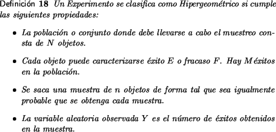
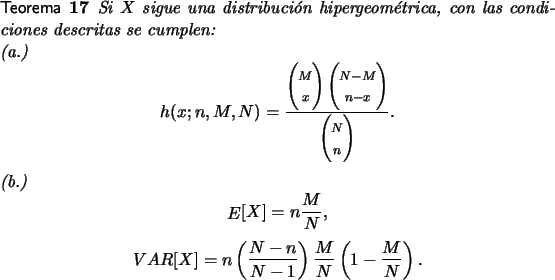

Distribución de probabilidad Hipergeométrica

Los tipos de aplicaciones en los cuales la distribución es hipergeométrica son muy similares a aquellos donde se aplica la binomial. Una manera de entender la diferencia entre ambas es analizando el esquema con que se lleva a cabo el muestreo. Mientras que en la distribución binomial el muestreo se realiza con reemplazo de cada artículo, después de observarse, en la hipergeométrica el muestreo se lleva a cabo sin reemplazo.
Por ejemplo de un naipe se desea extraer una muestra de 5 cartas y calcular la probabilidad de obtener 3 cartas rojas. En este caso se deben muestrear 5 objetos, para cada objeto se considera como éxito el hecho que la carta sea roja y como fracaso que sea negra, hay 26 éxitos en la población, toda muestra de 5 cartas tiene la misma probabilidad de ser elegida.
El conjunto de valores posibles x para la variable aleatoria en un experimento hipergeométrico está restringido por dos condiciones importantes, la primera de ellas es que en la muestra puede haber a lo sumo min{n, M} éxitos mientras que al menos hay max{0, n - (N - M)} éxitos.
La distribución de probabilidad h(x;n, M, N) depende de:
- el tamaño de la muestra n,
- el tamaño del conjunto sobre el cual se toman los objetos N,
- y el número de éxitos, M, en el conjunto sobre el que se hace el muestreo.
El cálculo de la distribución de probabilidad para un valor x de los posibles de la variable aleatoria se puede hacer de manera simple pues la probabilidad P[X = x] puede reducirse a un problema de conteo. Se eligen x de los M éxitos y se eligen n - x de los N - M que no son éxitos, y se divide entre el total de posibles maneras de escoger los x elementos de los N. Esto conduce a la expresión:

Los cálculos que se necesitan para la distribución hipergeométrica se pueden hacer recurriendo a la herramienta adjunta.


Ejemplo 24
Un equipo de trabajo de 5 personas se va a seleccionar de entre cinco hombres y tres mujeres. Si la variable aleatoria es el número de hombres en el equipo, ¿cuál es la distribución de probabilidad asociada?
Solución
Los posibles valores de esta variable aleatoria son 2, 3, 4 y 5 y las probabilidades son:
El lector puede verificar que la media para esta distribución es 176/56.
Ejemplo 25
De una población de 500 animales se capturan 200, se marcan y se sueltan para que vuelvan a mezclarse con el resto de la población.
La probabilidad de que en una muestra de 20 animales capturados o recapturados haya 4 o menos marcados se puede calcular por
Mientras tanto la probabilidad de que aparezcan 3 o más animales marcados en una captura o recaptura de 20 es: